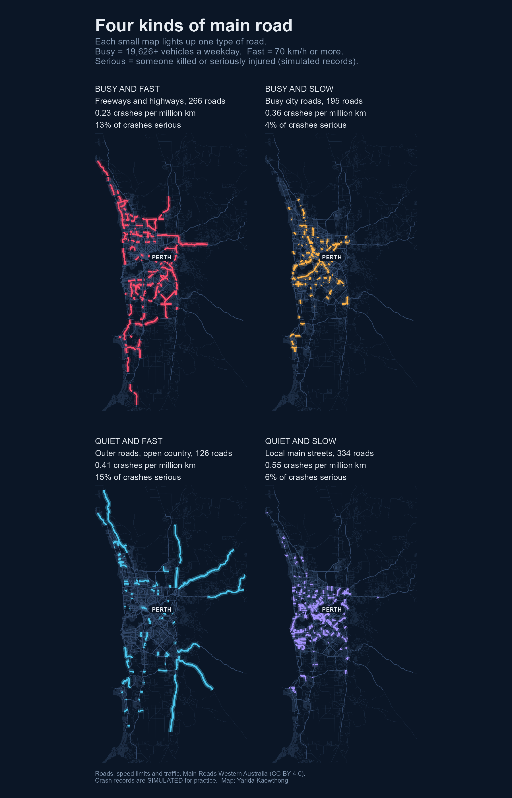
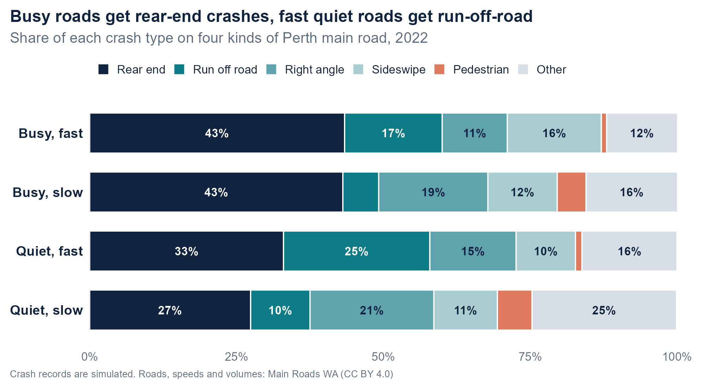
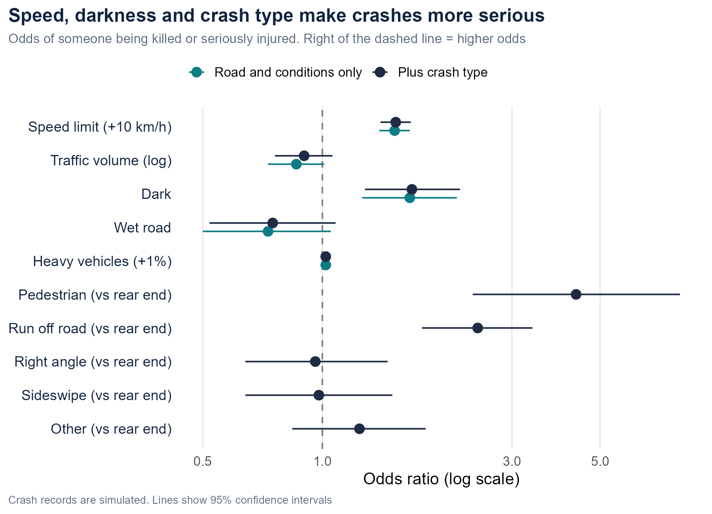
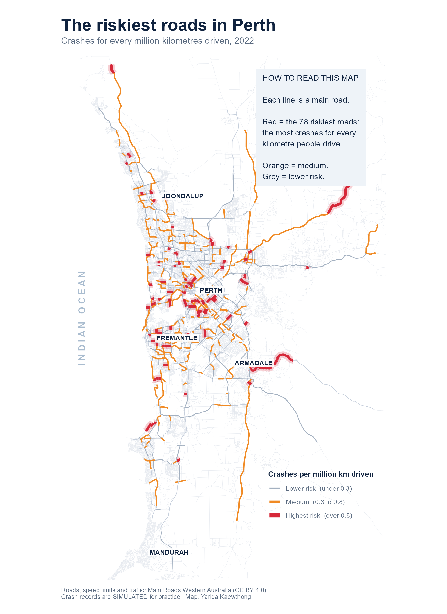
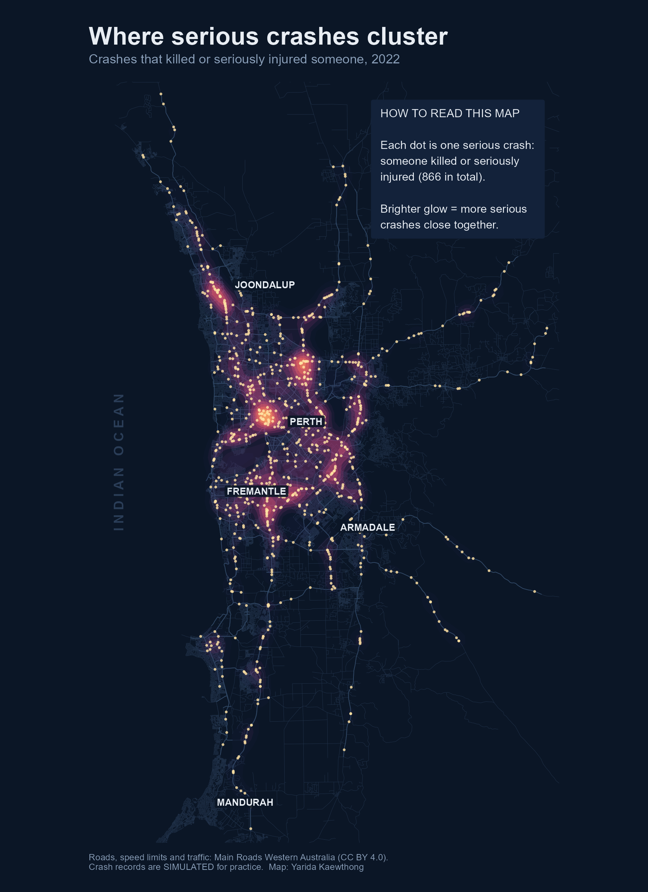

06 / GIS · R · Independent project
Congestion or speed: what shapes crashes on Perth's main roads?
Busy roads have more crashes simply because more people drive on them. The real question is what kind of crash happens, and how bad it is, on different kinds of road. I joined Main Roads WA open data on Perth's road network, speed zones and traffic counts into one link-by-link risk profile, then built a full crash-analysis workflow in R and GIS.
by traffic volume and speed zone
cleaned and matched to the network
per extra 10 km/h (simulated data)
The question
Road safety research asks whether crashes come mainly from congestion, where dense, stop-start traffic causes many low-speed rear-end crashes, or from speed, where free-flowing roads produce fewer crashes but more severe ones. To test that, every stretch of road needs to carry both a traffic volume and a speed zone.
- Where do crashes concentrate, once traffic exposure is taken into account?
- Does the type of crash change with traffic volume and speed zone?
- What makes a crash more likely to kill or seriously injure someone?
The data
Three Main Roads Western Australia open datasets (CC BY 4.0), each in a different shape, were projected to GDA2020 / MGA Zone 50 so distances are in metres, then joined to the M-Links road network. Every filtering and matching decision was logged and counted.
| Layer | Detail | Join rule |
|---|---|---|
| M-Links road network | 4,683 Perth metro links | The base layer |
| Legal speed limits | 38,871 segments; 34,256 coded from the default built-up limit | Nearest segment within 20 m of each link's midpoint |
| Traffic Digest counts | 1,307 metro count sites, average weekday volume | Nearest link within 30 m; 922 links counted |
| Crash records, 2022 | 9,259 rows, 9,214 after cleaning | Nearest link within 25 m |
About the crash records: the Main Roads WA crash dataset was offline, so the workflow was built and tested on simulated crash records placed on the real road network. Roads, speeds and volumes are real; crash results below describe the simulation, not real WA roads. The workflow is ready to rerun the moment real records are available.

What the analysis showed
-
01
Counts and rates tell different stories. High-volume, high-speed links had the most crashes (1,301) but the lowest rate, 0.23 per million vehicle-kilometres. Quiet, low-speed streets had the highest, 0.55. Ranking roads by raw counts would point resources at the wrong places.
-
02
The type of crash follows the road profile. Rear-end crashes made up 43% of crashes on busy links, against 27% on quiet, low-speed ones. Run-off-road crashes made up 25% on quiet high-speed links, against 6% on busy low-speed ones (χ² = 286.4, df = 15, p < 0.001).
-
03
Speed, not volume, drives severity. In a logistic regression, each extra 10 km/h of speed limit raised the odds of a death or serious injury by about half (OR 1.53, 95% CI 1.40–1.67), and darkness by 68%. Once speed was included, traffic volume had no clear effect (OR 0.90, CI 0.76–1.06).
-
04
The method recovers the truth. Because the crash records were simulated, the true effects were known in advance. The models recovered them closely: run-off-road OR 2.46 against 2.46 true, darkness 1.68 against 1.57, and no volume effect in either. That is the check I want before trusting a method on real data.


On the map
Every street in Perth is drawn faintly underneath, from the 38,871 speed-zone segments, so the analysed main roads stand out on top.


How it was done
Clean and log every decision. Speed limits arrived as text such as “60km/h”, or as a default built-up-area rule, and were parsed into numbers with the default flagged so the assumption can be tested later. Planted problems in the crash file (25 duplicates, 12 rows with no location, 8 dated outside 2022) were found and removed, and each one was counted in a data-quality log.
Join by distance, with a tolerance. Count sites, speed zones and crashes were matched to the nearest road link only within a set distance (20–30 m), so a far-away point is left unmatched rather than forced onto the wrong road. Speed was read from a point mid-link to avoid picking up cross streets at intersections.
Compare risk, not just counts. Crash rates divide crashes by exposure in million vehicle-kilometres. Group rates sum crashes and exposure before dividing, and the top-10 ranking excludes links under 500 m or with very little traffic, where one crash would otherwise look extreme.
Test, then model. A chi-square test with standardised residuals showed which crash types drive the difference between road profiles. Two logistic regressions modelled serious outcomes, with and without crash type, compared on AIC (1,923 to 1,883).
Worth stating up front
- Simulated crash records. The workflow is real and was validated, but the crash findings describe the simulation. Real WA crash data is needed before drawing conclusions about real roads.
- Speed limits are not speeds. Open data shows the posted limit, not how fast people actually drive, so speeding itself cannot be measured. Operating-speed data and volume-to-capacity ratios would answer the compliance side directly.
- Exposure is approximate. Weekday volume × 365 overstates weekend traffic, and only 922 of 4,683 links have a traffic count.
- Volume stands in for congestion. A daily count hides peak-hour queues; time-of-day data would sharpen the congestion measure.